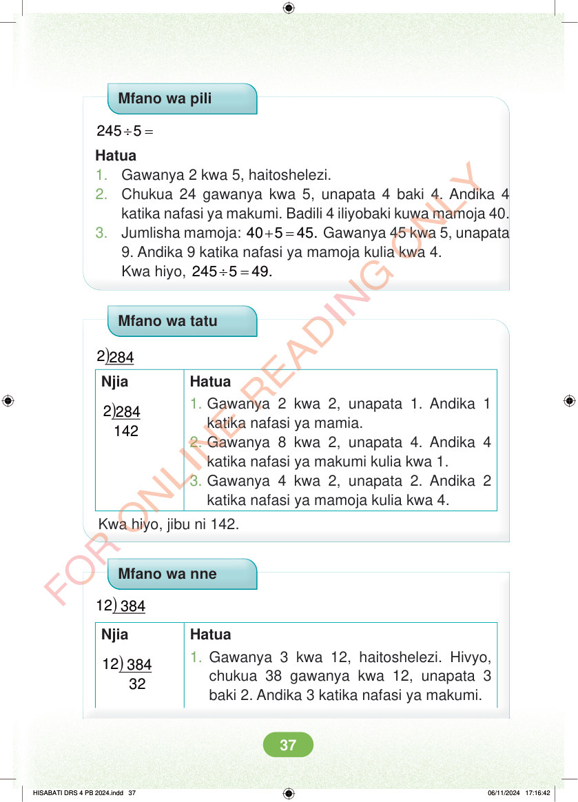

<!DOCTYPE html>
<html lang="sw-TZ"><head><meta charset="utf-8"><meta name="viewport" content="width=device-width,initial-scale=1">
<title>Hisabati: Kitabu cha Mwanafunzi Darasa la Nne</title>
<meta name="title-id" content="pg043_sec001"><meta name="page-section-id" content="45">
<link href="./content/tailwind_output.css" rel="stylesheet"><link href="./assets/libs/fontawesome/css/all.min.css" rel="stylesheet"><link href="./assets/fonts.css" rel="stylesheet">
<style>body{margin:0;background:#eef1ed}main{width:100%;display:flex;justify-content:center;padding:1rem 1rem 5rem;box-sizing:border-box}#content{width:100%;display:flex;justify-content:center}.pdf-page{position:relative;width:min(calc(100vw - 2rem),56rem);aspect-ratio:540.8980102539062/750.6610107421875;background:white;box-shadow:0 4px 24px #0002;overflow:hidden}.pdf-page img{position:absolute;inset:0;width:100%;height:100%;object-fit:fill}</style>
</head><body><main><h1 class="sr-only" id="page-heading">Ukurasa wa 43</h1><div id="content" class="opacity-0"><section role="article" data-section-type="pdf_accessible_page" data-section-id="pg043_sec001" aria-labelledby="page-heading" class="pdf-page"><p class="sr-only" data-id="pg043_gp001_tx001">Mfano wa pili ÷ = 245 5 Hatua 1. Gawanya 2 kwa 5, haitoshelezi. 2. Chukua 24 gawanya kwa 5, unapata 4 baki 4. Andika 4 katika nafasi ya makumi. Badili 4 iliyobaki kuwa mamoja 40. 3. Jumlisha mamoja: + = 40 5 45. Gawanya 45 kwa 5, unapata 9. Andika 9 katika nafasi ya mamoja kulia kwa 4. Kwa hiyo, ÷ = 245 5 49. Mfano wa tatu ) 2 284 Njia ) 2 284 142 Hatua 1. Gawanya 2 kwa 2, unapata 1. Andika 1 katika nafasi ya mamia. 2. Gawanya 8 kwa 2, unapata 4. Andika 4 katika nafasi ya makumi kulia kwa 1. 3. Gawanya 4 kwa 2, unapata 2. Andika 2 katika nafasi ya mamoja kulia kwa 4. Kwa hiyo, jibu ni 142. Mfano wa nne ) 12 384 Njia ) 12 384 32 Hatua 1. Gawanya 3 kwa 12, haitoshelezi. Hivyo, chukua 38 gawanya kwa 12, unapata 3 baki 2. Andika 3 katika nafasi ya makumi. HISABATI DRS 4 PB 2024.indd 37 HISABATI DRS 4 PB 2024.indd 37 06/11/2024 17:16:42 06/11/2024 17:16:42</p></section></div></main><div class="relative z-50" id="interface-container"></div><div class="relative z-50" id="nav-container"></div><script src="./assets/offline-preloader.js"></script><script src="./assets/scorm.js"></script><script src="./assets/base.bundle.local.js"></script></body></html>